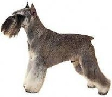

<? title('Цвергшнауцер') ?>
<table border="0" class="layout">
    <tbody style="text-align: left;">
        <tr style="text-align: left;">
            <td valign="top" style="text-align: left;">
                <div class="holster">
                    <div class="block_container s3 b-image txt-center" id="e_1282816516321"><span></span></div>
                    <div class="block_container s3 b-image txt-center"></div>
                    <div class="block_container s3 b-image txt-center" style="text-align: center;"><span>Наши заводчики:</span></div>
                    <div class="block_container s3 b-image txt-center" style="text-align: center;"></div>
                    <div class="block_container s3 b-image txt-center" style="text-align: center;"><span><strong>Игнатьева Ирина - </strong></span></div>
                    <div class="block_container s3 b-image txt-center" style="text-align: center;"><span><strong>"Арт Сильвер"</strong> </span></div>
                    <div class="block_container s3 b-image txt-center" style="text-align: center;"><span>тел: 8-916-222-90-56</span></div>
                    <div class="block_container s3 b-image txt-center" style="text-align: center;"></div>
                    <div class="block_container s3 b-image txt-center" style="text-align: center;"><span><strong>Филатова Наталья - "Сибирский Бриз" </strong></span></div>
                    <div class="block_container s3 b-image txt-center" style="text-align: center;"><span><strong>&nbsp;</strong>тел: 420-16-46, 8-916-470-03-14 <br /></span></div>
                </div>
            </td>
            <td style="text-align: left;">
                <div class="holster">
                    <div class="block_container s3 b-text b-static-text user_css_12816005438" id="e_12828164386">
                        <p style="text-align: center;"><span style="color: #006600;"><span style="color: #0000ff;"><strong>Цвергшнауцер</strong></span></span></p>
                        <p style="text-align: justify;"><span style="color: #006600;"><span style="color: #0000ff;"><strong>Из истории породы:</strong> миниатюрные, или карликовые, шнауцеры происходят главным образом от небольших шнауцеров стандартного размера, тем более что в начапе заводской работы со шнауцерами был предусмотрен рост 30-50см и вес 8-16 кг, то есть нижняя граница роста соответствует размерам современных цвергшнауцеров. Есть данные, что малые шнауцеры получены в начале XX столетия путем скрещивания аффен-пинчеров и барбетов (скорее всего, собак типа мелких пуделей и болонок) с конюшенными пинчерами (шнауцерами). Не исключено участие шпицев, а также некоторых терьеров. В племенной книге - первый цвергшнауцер по кличке Йокко Фульда Лилипут был зарегистрирован в 1898 году. Однако цвергшнауцеров записывали как аффен-пинчеров, миниатюрных пинчеров, а также как шнауцеров (мелкие особи стандартного варианта). Название раттлер (крысолов) стало причиной того, что цвергшнауцеры в США и Канаде были отнесены к группе терьеров.</span></span></p>
                        <p style="text-align: justify;"><span style="color: #006600;"><span style="color: #0000ff;"><strong>Общая характеристика:</strong> смелая, выносливая, бдительная собака. Подвижная с уравновешенным темпераментом. Характер независимый, умеренно злобный. Легко дрессируется.</span></span></p>
                        <p style="text-align: justify;"><span style="color: #006600;"><span style="color: #0000ff;"><strong>Содержание и уход:</strong> идеальная собака для городских квартир, а также для загородных домов. За шерстью необходимо ухаживать - стричь и тримминговать.</span></span></p>
                        <p style="text-align: justify;"><span style="color: #006600;"><span style="color: #0000ff;"><strong>Размеры:</strong> рост 30-35 см.</span></span></p>
                        <p style="text-align: justify;"><span style="color: #006600;"><span style="color: #0000ff;">____________________________________</span></span></p>
                        <p style="text-align: justify;"> </p>
                    </div>
                </div>
            </td>
        </tr>
    </tbody>
</table>​